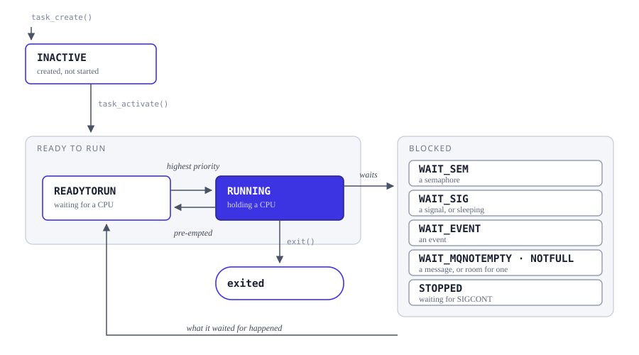
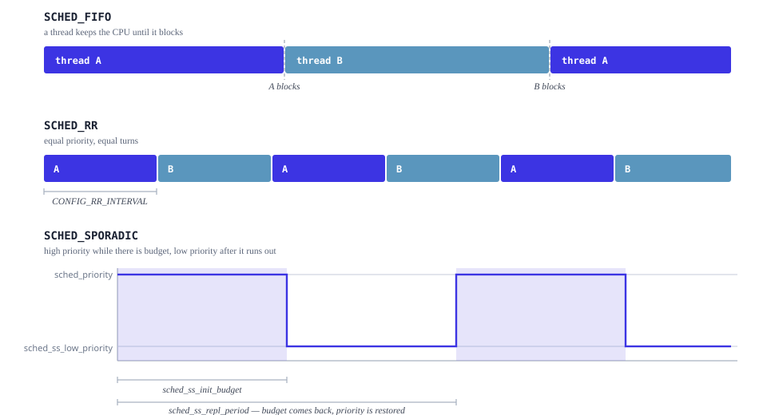

Scheduling
NuttX decides which thread runs, and when. This page describes that decision: the states a thread moves through, the policies that order threads of equal priority, and the interface an application uses to choose between them.
The code lives under sched/.
Priority comes first
NuttX is a strict priority scheduler. The thread that runs is always the ready-to-run thread with the highest priority. A lower-priority thread runs only while no higher-priority thread is ready; the moment a higher-priority one becomes ready, it takes the CPU. NuttX is fully pre-emptible, so that happens immediately, including from inside an interrupt handler.
Priority alone does not say what happens when two ready threads share the same priority. That is what the scheduling policies decide, and it is the only thing they decide.
Thread states
Every thread is in exactly one state, held in its task control block. The
states are defined by enum tstate_e in include/nuttx/sched.h, and the
comment beside each one sorts it into a group: INVALID for a TCB that has
not been initialised, READY_TO_RUN, and BLOCKED.


The states of enum tstate_e, and what moves a thread between them.
INACTIVE carries the BLOCKED comment as well, though it is not
waiting on anything: it is a task that has been created and not yet
activated.
Two ready-to-run states are left off the diagram to keep it readable, and
they are not alike. ASSIGNED is READYTORUN with a CPU already
picked, and it is the conditional one – it exists only under
CONFIG_SMP. PENDING is always compiled, and it is narrower than its
name suggests: a thread goes there only if it became ready while another
thread held sched_lock() and would have pre-empted it.
nxsched_add_readytorun() tests both halves –
nxsched_islocked_tcb(rtcb) and a new priority higher than the running
thread’s – so a thread that becomes ready at equal or lower priority under
the lock joins the ordinary ready-to-run list instead.
A thread in any ready-to-run state is runnable; only one per CPU is
RUNNING. A thread in any blocked state is waiting for something
specific, and the state says what: a semaphore, a signal, an event, a
message arriving, or room to put one. STOPPED waits for SIGCONT
under CONFIG_SIG_SIGSTOP_ACTION, and one more state is off the diagram
too: WAIT_PAGEFILL, under CONFIG_LEGACY_PAGING. Sleeping is not a
state of its own – TSTATE_SLEEPING is defined as another name for
TSTATE_WAIT_SIG. This is why a stack dump tells you not just that a
thread is stuck but what it is stuck on.
Scheduling policies
The policy applies between threads of equal priority. It never lets a lower-priority thread run ahead of a higher-priority one.


The same two threads under each policy, and what the sporadic parameters mean.
SCHED_FIFO – run to completion
A thread runs until it blocks, exits, or is pre-empted by something of higher priority. Two threads of the same priority do not share the CPU: the first one to start keeps it until it gives it up.
This is the most predictable policy and the cheapest one, and it is what a
new task gets – but only while round robin is switched off.
nxthread_setup_scheduler() picks the policy for every new TCB with a
compile-time test, not a runtime one: TCB_FLAG_SCHED_RR and a timeslice
of CONFIG_RR_INTERVAL when that value is positive,
TCB_FLAG_SCHED_FIFO otherwise. So CONFIG_RR_INTERVAL is not a
per-thread opt-in; setting it changes the default policy of the whole
system.
SCHED_RR – take turns
Same as SCHED_FIFO, except that a thread which has been running for
CONFIG_RR_INTERVAL milliseconds is moved to the back of the queue of
threads at its own priority, and the next one runs.
CONFIG_RR_INTERVAL counts milliseconds and defaults to 0, which disables
the policy entirely – and entirely is literal: at 0 the SCHED_RR case
is not compiled into nxsched_set_scheduler() at all, so asking for the
policy at run time fails rather than being ignored. Set it to a positive
value and, as above, every task starts out round-robin. Use it when several
threads of the same priority have to make progress together, and none of
them blocks often enough to give the others a chance on its own.
SCHED_SPORADIC – a budget per period
Enabled by CONFIG_SCHED_SPORADIC. This one is worth understanding
before reaching for it, because it behaves unlike the other two.
A sporadic thread has two priorities and a budget:
|
Meaning |
|---|---|
|
The high priority. The thread runs at this priority while it still has budget left. |
|
The low priority. The thread drops to this once the budget is spent. |
|
How much CPU time the thread may spend at the high priority. A
|
|
The length of one cycle, budget included. Also a |
|
How many replenishments may be pending at once
( |
While the thread has budget it competes at sched_priority. When the
budget runs out it is demoted to sched_ss_low_priority, so it keeps
running only if nothing else wants the CPU. Then the cycle repeats.
The period contains the budget rather than following it, which is the part
worth reading twice. sched_sporadic.c asserts
repl_period >= budget and spends the difference at the low priority:
remainder = sporadic->repl_period - sporadic->budget;
Give a thread a 10 ms budget and a 100 ms period and it runs high for up to
10 ms, low for the other 90, and is promoted again 100 ms after the cycle
began – not 100 ms after the budget ran out. sched_ss_max_repl bounds a
second mechanism rather than this one: when the thread is pre-empted part-way
through its budget, each fragment is replenished one period after it was
consumed, and the field caps how many such replenishments may be outstanding
at once.
What this buys you is a bounded amount of high-priority CPU time for a thread whose workload you do not fully trust: an event handler that is usually short but occasionally is not. It gets to respond quickly, and it cannot starve the rest of the system if it misbehaves. A thread that would otherwise have to be given a low priority – and therefore a poor response time – can be given a high one safely.
Choosing a policy
Policy |
Use it when |
|---|---|
|
The normal case. Threads are ordered by priority and each runs until it blocks. |
|
Several threads sit at the same priority and all have to progress, for example a set of equivalent workers. |
|
A thread needs a fast response but its running time is not bounded, and starving lower-priority work is not acceptable. |
SCHED_OTHER and SCHED_NORMAL exist for portability and are both 0;
SCHED_NORMAL is defined as an alias of SCHED_OTHER, which the header
describes as mapping to SCHED_FIFO or SCHED_RR. In the code that
mapping goes to SCHED_RR and only while CONFIG_RR_INTERVAL is
positive: nxsched_set_scheduler() compiles case SCHED_OTHER next to
case SCHED_RR under that same test.
include/sched.h also defines SCHED_BATCH and SCHED_IDLE. Neither
name appears anywhere else in the tree, and nxsched_set_scheduler() does
not accept either, so asking for one fails. They are numbers reserved in a
header, not policies you can select.
Application interface
The POSIX interface to all of the above – sched_setscheduler(),
sched_setparam(), sched_yield(), sched_rr_get_interval() and the
rest – is documented in Task Scheduling Interfaces.
Two interfaces are specific to NuttX and worth naming here:
sched_lock()/sched_unlock()Hold off the scheduler without disabling interrupts. Interrupts still run; what is suspended is the switch to another thread. A thread that becomes ready while pre-emption is locked goes to
PENDING, provided it would have pre-empted the thread holding the lock. This is cheaper and far less disruptive than disabling interrupts, and it is almost always the right tool when the goal is “do not switch away from me” rather than “do not interrupt me”. See Effects of Disabling Interrupts or Pre-Emption on Response Latency for what each choice costs.sched_setaffinity()/sched_getaffinity()Restrict a thread to a set of CPUs under
CONFIG_SMP. See SMP (Symmetric MultiProcessing).